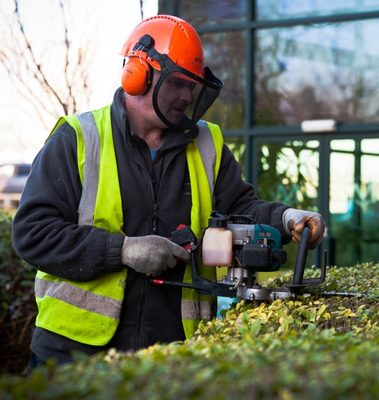

|
||||
|  | ||||
The best way to maintain your property and buildings is to have a regular schedule of maintenance. Construction Linx can undertake all aspects of maintenance, from regular checks and testing, to actually carrying out the work. Construction Linx offer a unique Prevention Audit, to identify those things that may go wrong with your buildings or that do not present the quality image your customers and staff demand. It contains;
Some of these are tests compulsory by law, others are to enhance your image or increase your health and safety provision. Businesses can either make arrangements themselves or use a reliable partner – that partner is Construction Linx. |
|
|||
| Buttons Web Solutions | ||||
|---|---|---|---|---|